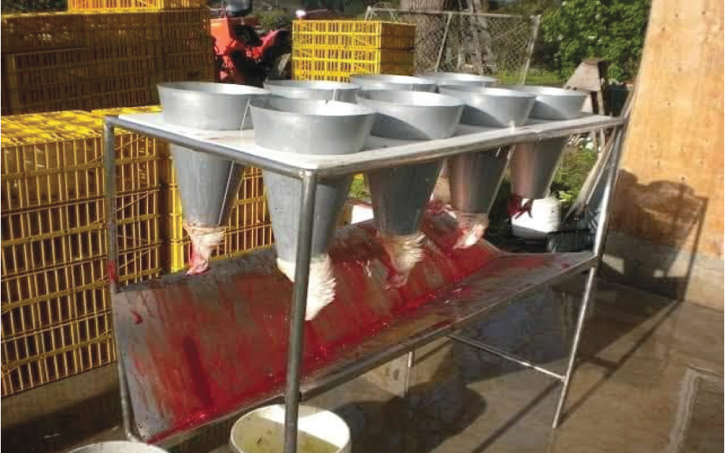

be supplied and the chicken must not be stressed by over-congestion or by frequent movements. Slaughtering is done by cutting off the head either partially or fully severed from the neck. It is a good practice to hold the chicken in a slaughtering cone with the head hanging out from the narrow end of the cone (refer to Figure 12.1). The cone helps a chicken from struggling violently after slaughtering. The person slaughtering the chicken grabs the head of the chicken while firmly pressing his thumb at the point between the head and the neck. A sharp knife is used to separate the head from the body. The chicken is left in the killing cone for at least 5 minutes for thorough bleeding.

Plucking and carcass dressing
First, you put the chicken in hot water. This is called scalding. Then, you take off the feathers. This is called plucking. You can pluck the feathers by hand or use a machine (refer to Figure 12.2). There are two ways to use the machine. One way is dry plucking where you take off the feathers without using hot water. The other way is wet plucking where you use hot water before taking off the feathers. After all the feathers are off, you take out the internal organs and the legs. Then, you wash the chicken well. After it cools down, it is ready to be packed as a whole chicken. You can also cut the chicken into smaller parts to sell (refer to Figure 12.3).